Loss of Support
A measure of the loss of contact between the pavement slab and the underlying foundation layer, typically caused by erosion, non-uniform settlement, curling/warping, or poorly compacted backfill. In the pavement foundation study, loss of support was back-calculated by comparing kcomp-FWD-Corr (which accounts for in-situ conditions) with kcomp-DCP (which does not). The study found LOS values ranging from 0.7 to 1.7 across all sites — higher than the values currently assumed in SUDAS design (1 for natural subgrade, 0 for granular subbase). For sections with granular subbase, LOS ranged from 0.7 to 1.3. [1]
Sources (10)
Introduction to Loss of Support (LOS)
The AASHTO 1986 design guide defines three specific geometric configurations for loss of support—Factor 1 (corner), Factor 2 (edge), and Factor 3 (center)—to quantify the area of complete support loss [1]. These factors are influenced by precipitation, cross slope, joint patterns, subbase materials, slab thickness, traffic loads, and the number of load repetitions [1].
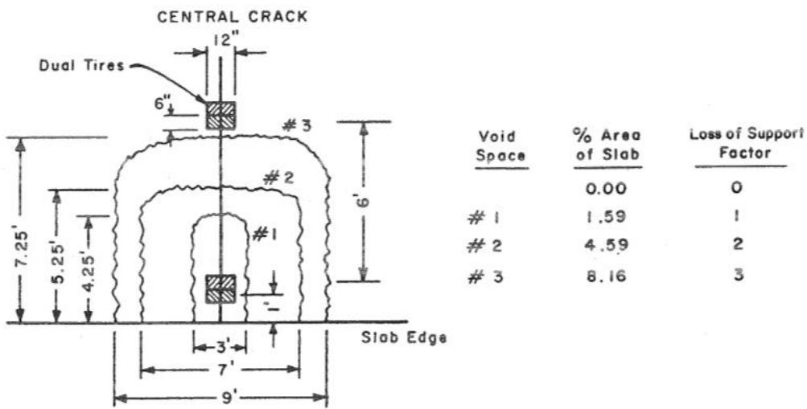
Slab and support conditions defining loss of support factors (from AASHTO 1986) [1]Loss of support may occur along pavement edges even on pavements with otherwise excellent long-term performance; for example, Dallas County R-22 maintained a PCI of 69 at age 32 years but exhibited occasional instances of loss of support specifically along the pavement edge [2]. Across 16 sites, LOS ranged from 0.7 to 1.7, all of which were higher than SUDAS defaults.
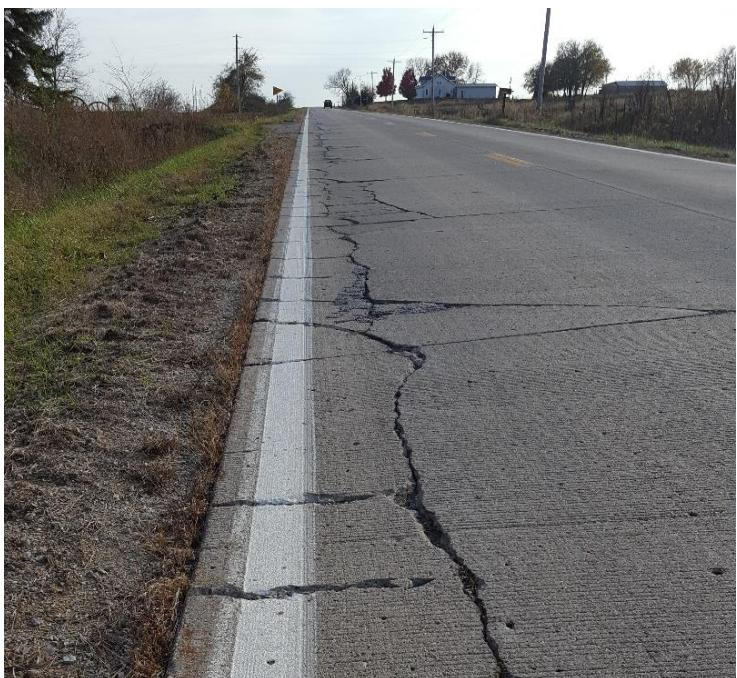
Loss of support along pavement edge on Dallas County R-22, November 2016 [2] Boxplots of Static k_c o m p - F W D - C o r r and k_c o m p - D C P values for different foundation layer support conditions [1]
Boxplots of Static k_c o m p - F W D - C o r r and k_c o m p - D C P values for different foundation layer support conditions [1]
Mechanisms of Curling, Warping, and Settlement
The pumping process, driven by excess moisture in erodible bases or fine-grained subgrades, forces a mixture of water and fines from beneath the leave slab corner to be ejected through transverse joints or shoulders, eventually creating voids that cause loss of support [3]. This mechanism is particularly detrimental for jointed plain concrete pavements (JPCP) without dowels, where it combines with material buildup under approach slabs to induce significant joint faulting [3]. Such curling and warping–induced loss of subgrade support can cause voids beneath the PCC, which can easily result in pumping and structural deterioration [4]. Specifically, loss of contact occurs at the center of the slab during downward curling and at the corners during upward curling, which increases stresses and aggravates pavement deterioration under repeated loading [4]. These curling stresses are affected by slab length and the degree of support under the slab, with measured curling stresses potentially reaching magnitudes comparable to those produced by the heaviest legal wheel loads [4]. Furthermore, the degree of joint opening caused by upward curling under negative temperature gradients is affected by drying shrinkage and slab length [4], while the effective temperature differential is a parameter used in 3D FE modeling to represent the temperature differential causing fatigue damage equivalent to accumulated pavement fatigue from daily curling changes [4].
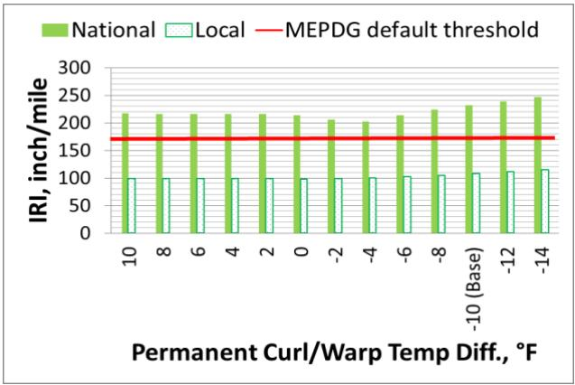
Effect of permanent curling and warping temperature difference on MEPDG performance predictions for I-80 JPCP site: faulting (top left), transverse cracking (top right), and IRI (bottom) [4]Additional factors contributing to loss of support include slab settlement caused by underlying frost heaving, which can result in insufficient support leading to high deflection at transverse joints; this condition exerts very high tensile stress under traffic loading, which can initiate longitudinal cracking [5]. Similarly, high degrees of slab curling combined with localized consolidation and settlement of the base/subbase course can result in significant loss of support at transverse joints, leading to high tensile stresses developed under traffic loading applied to uplift at the slab corners [5]. Finally, loss of support can be associated with poor local drainage conditions that cause erosion of underlying soil near creek crossings or other water bodies, a mechanism that contributes to cracking at pavement edges and is distinct from traffic-induced failures [2].
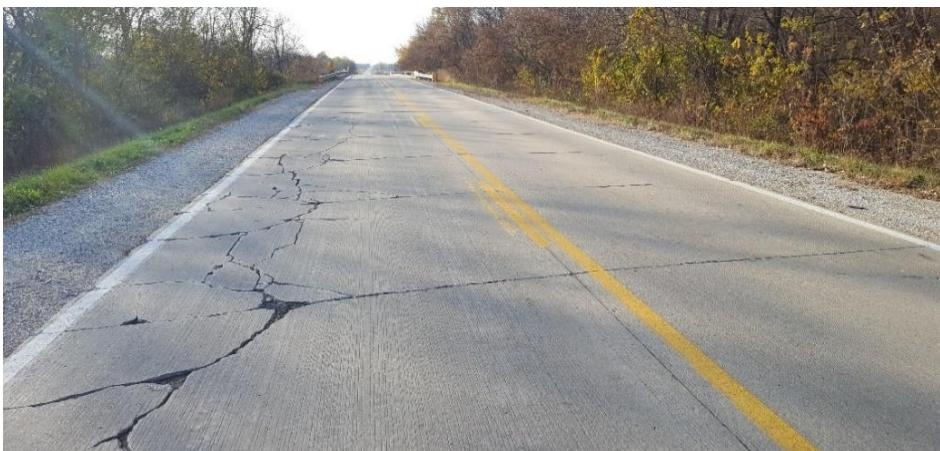
Cracking at slab edge approaching creek crossing on Dallas County F-31 west of Granger, November 2016 [2]Impact on Pavement Design and Stress Modeling
LOS affects the relationship between composite k values and is a key input to AASHTO 1993 rigid pavement design. In the revised thin whitetopping design procedure, which is more sensitive to existing subgrade characteristics than previous methods, precise quantification of support conditions is required to estimate required overlay thickness [6]. Consequently, design equations for predicting PCC stresses in whitetopping include specific adjustments to account for partial bond and the loss of support resulting from temperature-induced curling [6]; specifically, loss of support is explicitly modeled as an adjustment factor applied to increased load-induced concrete stresses to account for temperature curling effects [6].
 Temperature differentials applied to the composite pavement [6]
Temperature differentials applied to the composite pavement [6]
Widened concrete slabs reduce critical stresses at edges by moving truck axles further from free edges to create interior-loading conditions rather than edge-loading. This design increases the mean wander distance from 18 inches to 42 inches away from the slab edge in the longitudinal direction, which helps mitigate potentially dangerous edge drop-offs [5].
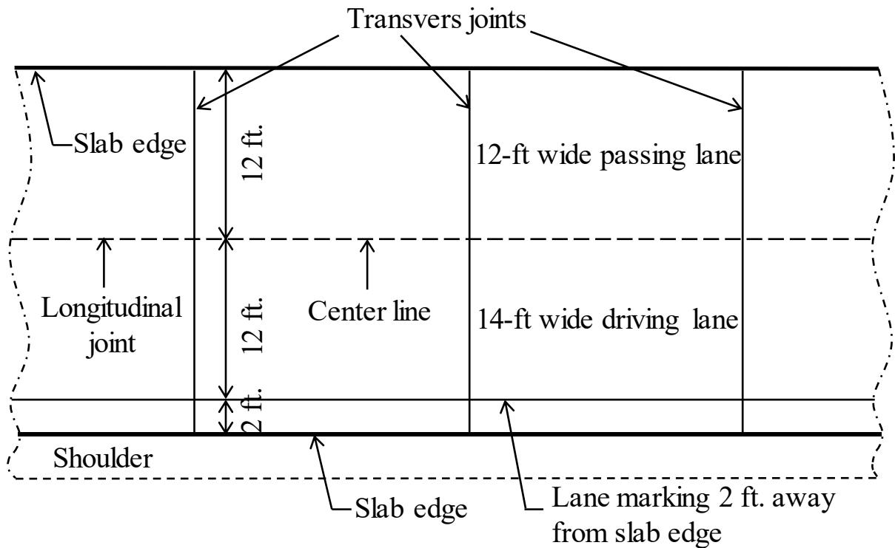
Typical widened slabs used in two-lane pavement [5]Subgrade and Base Layer Characteristics
Loss of support in concrete overlays is less common than in full-depth pavements due to the presence of an existing base layer, but it can still occur under specific circumstances such as major flood events or poor drainage [2]. Early-age cracking in overlays may be directly related to loss of support conditions [2], and permanent deformations in support layers, such as the HMA layer directly beneath the overlay or deeper base/subgrade layers, are a primary cause of loss of support failures in thinner whitetopping pavements [6]. For example, even with granular subbase, LOS was 0.7 to 1.3 (SUDAS assumes 0 for subbase), and poorly compacted backfill at Westlawn Dr. contributed to elevated LOS despite 8.5–10 in. subbase.
The behavior of the foundation is influenced by its stiffness; a stiff underlying layer resists slab settlement during curling, whereas a soft base provides a “bedding” effect that reduces restraint but can lead to higher critical tensile stresses under traffic loads due to larger deflections [4]. While a soft base can provide a “bedding” effect to counteract the slab’s downward movements, it can cause higher deflection when taking traffic loads into account [4]. Consequently, the effective modulus of subgrade reaction is estimated based on an assumed potential loss of support due to erosion, with a design factor (LS) of 0.5 [7]. To achieve an adjusted effective composite modulus of subgrade reaction ($k_{comp}$) of 150 pci, which is the minimum recommended value for rigid pavement design in Iowa, the foundation layer requires an effective $k_{comp}$ of 470 pci when assuming a loss of support factor of 1; this adjustment accounts for potential erosion and differential vertical movements [1].
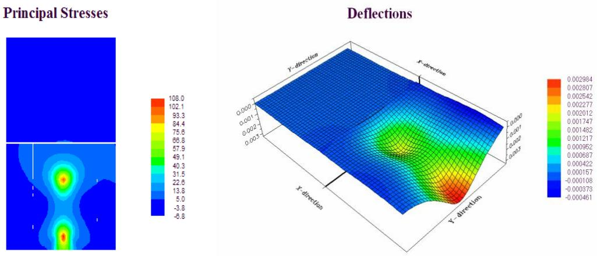
Contour plots of principal stresses and deflections under uniform and nonuniform subgrade conditions (from White et al. 2005b) [1]Dowel Performance and Load Transfer Efficiency
Pavements with dowel bars exhibit less curling and warping deflection than those without, as dowels restrict pavement deflection at joints [4]. The modulus of dowel support (K₀) is a critical parameter for Friberg’s design equations, yet it must be determined experimentally because no sound theoretical procedure exists for its calculation [8]. This modulus exhibits extreme variability across studies, with reported values ranging from 132,790 pci to over 5,000,000 pci depending on the testing methodology and material properties [8]. It is directly influenced by geometric and material properties, increasing with higher concrete strength but decreasing as the concrete depth below the dowel or the dowel bar diameter increases [8]. For steel dowels, Friberg recommended a design value of 1,000,000 pci, believing the modulus would seldom be less than 25 percent of the concrete’s modulus of elasticity [8]. In elastic range testing, Timoshenko’s analytical expression often fails to accurately back-predict embedded dowel displacements because it assumes linear elasticity and cannot account for complex nonlinear behaviors like dowel yielding or locally high bearing stresses; consequently, the modulus of dowel support must be adjusted based on the level of applied load even within the joint’s global linear range [8].
 ( b ) Figure 4.5 Load transfer distribution proposed by (a) Friberg and (b) Tabatabaie et al. [8]
( b ) Figure 4.5 Load transfer distribution proposed by (a) Friberg and (b) Tabatabaie et al. [8]
Repetitive high-stress loadings at the dowel-concrete interface cause concrete to break away, creating a void that increases system deflection before the dowel engages [8]. This loss in Load Transfer Efficiency (LTE) is directly reduced when loss of support exists under the slab, as any portion of the applied load not transferred to the adjacent slab results in increased deflection and stress on the underlying foundation [1]. Such voids compromise the structural integrity of jointed pavements, as this loss in load transfer efficiency forces the subgrade to carry additional stress, increasing the risk of differential settlement between adjacent slabs [8]. While GFRP dowels offer corrosion resistance, they exhibit higher joint deflections and lower stiffness under dynamic field testing compared to steel dowels due to their lower flexural stiffness modulus; however, this characteristic is advantageous because it reduces bearing stresses on the surrounding concrete, which are a primary cause of joint failure [8].
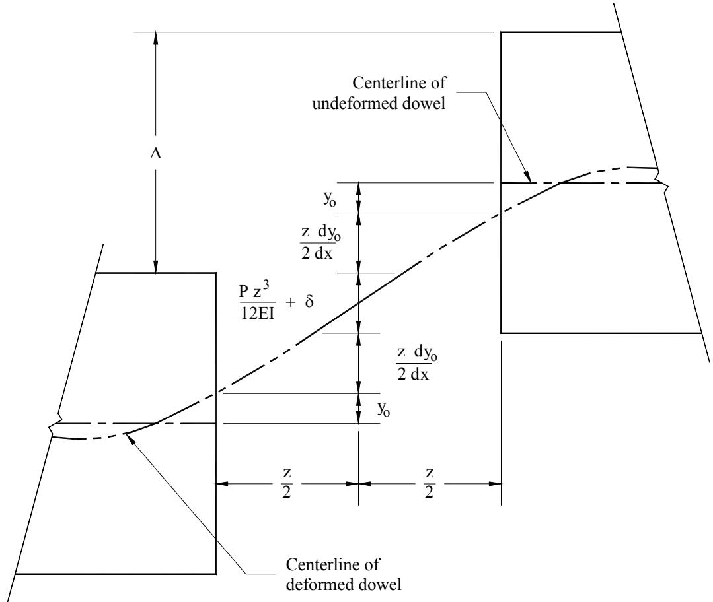
Relative deflection between adjacent pavement slabs [8]Cracking Patterns and Material Failure Modes
Shorter slab lengths are more susceptible to mid-slab or mid-panel cracking if loss of support occurs, necessitating careful attention to subgrade support when adopting shorter panel designs [4]. Furthermore, jointed plain concrete pavements are sensitive to top-down transverse cracking initiation and rapid crack propagation when loss of support exists simultaneously with joint loading from fully loaded multi-axle truck traffic [5].
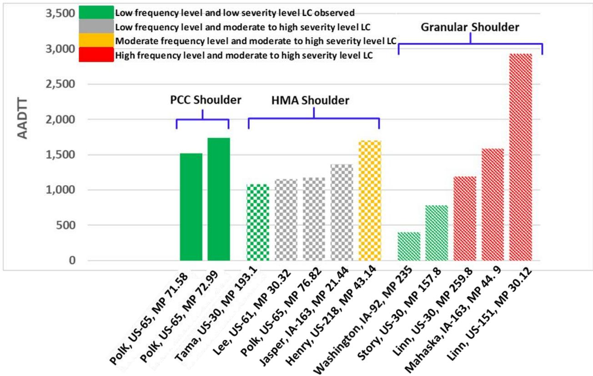
Frequency and severity level of slabs having longitudinal cracking versus truck traffic volume and shoulder type [5]Loss of support can also manifest as longitudinal and corner cracking in concrete overlays when underlying erosion occurs beneath the original pavement structure [2]. This specific distress pattern was observed on Linn County Blairs Ferry Road, where a major flood event caused significant erosion underneath the existing concrete before the overlay was constructed [2].
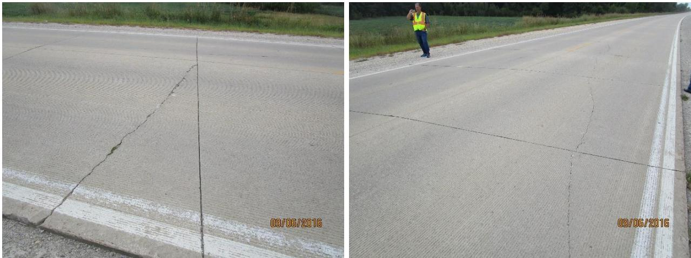
Longitudinal and corner cracking on Linn County Blairs Ferry Road, September 2016 [2]Mitigation Strategies: Fibers and Admixtures
Structural fibers in concrete overlays provide insurance against loss of materials and multiple cracking when an individual slab experiences a loss of support, effectively controlling the loss of section even after the concrete cracks [9]. Provided the overlay thickness is 4.5 inches or less, the use of structural fibers enables larger slab sizes without resulting in a loss of load transfer or increased cracking rates [9]. When isolated panels fail under this design system, these structural fibers control the loss of section upon concrete cracking, which allows maintenance personnel to replace fractured slabs using hand methods and standard repair materials [9]. Additionally, shrinkage-reducing admixtures can reduce early-age shrinkage by approximately 30% to 40%, helping minimize warping and subsequent loss of support [4].
Monitoring and Nondestructive Testing Methods
Automated nondestructive support-sensing devices can be integrated into paving equipment to continuously monitor pavement support layers during construction, allowing for real-time adjustments to mix design, slab thickness, or joint spacing based on measured stiffness [3]. This continuous monitoring capability enables the construction of high-quality pavements that are precisely tailored to the specific support conditions over which they are placed [3]. For detecting voids or loss of support under rigid pavements, the Seismic Pavement Analyzer (SPA), developed under the original SHRP program, utilizes five specific seismic techniques—Ultrasonic Body-Wave (UBW), Ultrasonic Surface-Wave (USW), Impact Echo (IE), Impulse Response (IR), and Spectral Analysis of Surface Waves (SASW) [10]. Unlike FWD tests, the SPA is a seismic test that determines material properties by analyzing the propagation velocity of waves with different frequencies through the tested medium rather than relying on static deflection measurements [10].
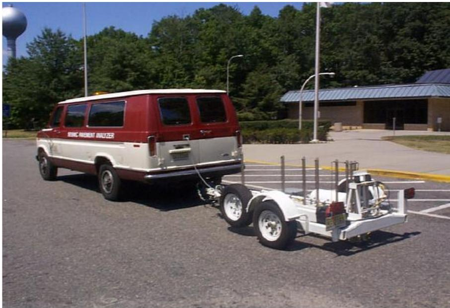
Seismic Pavement Analyzer (SPA) [10]Other methods include Falling Weight Deflectometer (FWD) testing, which can identify voids by calculating the zero-load intercept value, where an intercept greater than 2 mils indicates loss of support beneath the pavement [1]. Additionally, Concrete Pressure Head (CHP) tests detect erosion at the pavement/foundation interface through sudden increases in permeability [1].
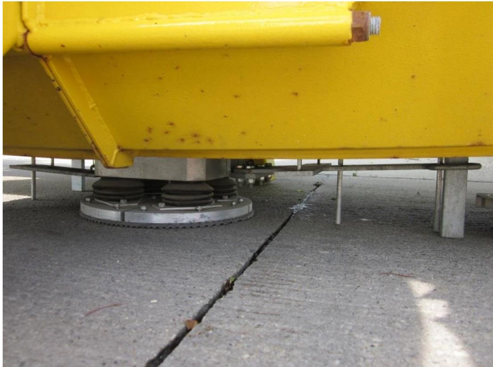
FWD test at a joint for LTE determination [1]Related Concepts
- Composite Modulus of Subgrade Reaction — the difference between FWD and DCP composite k reveals LOS
- Falling Weight Deflectometer — FWD tests capture in-situ LOS
- Dynamic Cone Penetrometer — DCP tests do not capture LOS
- Joint Faulting — LOS can contribute to differential settlement and faulting
- Pavement Foundation & Support
Joint faulting, defined as vertical separation between adjacent slabs, is identified as a predominant structural distress in whitetopping pavements directly caused by factors including poor load transfer and loss of support. [6]
Whitetopping-HMA delamination, which contributes to loss of support, is driven by upward warping from moisture loss, negative temperature gradient curling, axial drying shrinkage, traction forces, dynamic wheel loads, support layer shrinkage or swelling, HMA healing, and PCC relaxation creep. [6]
Joint sealing is utilized to minimize precipitation penetration into the pavement structure, thereby preventing base course or subgrade erosion that leads to loss of support and joint faulting. However, the efficacy of this method in extending pavement life remains questionable, with some jurisdictions replacing seals with narrow sawcuts while others conduct comparative tests on sealed versus nonsealed joints. [3]
References
- D. White and P. Vennapusa, "Optimizing Pavement Base, Subbase, and Subgrade Layers for Cost and Performance on Local Roads," Concrete Pavement Technology Center and Center for Earthworks Engineering Research, Ames, IA, Rep. TR-640, 2014. [Online]. Available: https://www.intrans.iastate.edu/wp-content/uploads/2018/03/local_rd_pvmt_optimization_w_cvr.pdf
- J. Gross, D. King, D. Harrington, H. Ceylan, Y. A. Chen, S. Kim, P. Taylor, and O. Kaya, "Concrete Overlay Performance on Iowa's Roadways (Field Data Report)," National Concrete Pavement Technology Center, Ames, IA, Rep. TR-698, 2017. [Online]. Available: https://www.intrans.iastate.edu/wp-content/uploads/2017/09/Iowa_concrete_overlay_performance_w_cvr.pdf
- D. Harrington, R. Rasmussen, D. Merritt, T. Cackler, and P. Taylor, "Long-Term Plan for Concrete Pavement Research and Technology—The Concrete Pavement Road Map (Second Generation): Volume II, Tracks (FHWA-HRT-11-070)," National Center for Concrete Pavement Technology, Iowa State University, Ames, IA, 2012. [Online]. Available: https://www.fhwa.dot.gov/publications/research/infrastructure/pavements/pccp/11070/11070.pdf
- H. Ceylan, S. Yang, K. Gopalakrishnan, S. Kim, P. Taylor, and A. Alhasan, "Impact of Curling and Warping on Concrete Pavement," Institute for Transportation, Ames, IA, Rep. TR-668, 2016. [Online]. Available: https://www.intrans.iastate.edu/wp-content/uploads/2018/03/curling_and_warping_impact_on_concrete_pvmt_w_cvr.pdf
- H. Ceylan, S. Kim, Y. Zhang, S. Yang, O. Kaya, K. Gopalakrishnan, and P. Taylor, "Prevention of Longitudinal Cracking in Iowa Widened Concrete Pavement," Institute for Transportation, Ames, IA, Rep. TR-700, 2018. [Online]. Available: https://www.intrans.iastate.edu/wp-content/uploads/2018/07/longitudinal_cracking_prevention_in_widened_concrete_pvmt_w_cvr.pdf
- J. K. Cable, F. S. Fanous, H. Ceylan, D. Wood, D. Frentress, T. Tabbert, S. Y. Oh, and K. Gopalakrishnan, "Design and Construction Procedures for Concrete Overlay and Widening of Existing Pavements," Center for Portland Cement Concrete Pavement Technology, Iowa State University, Ames, IA, Rep. TR-511, 2005. [Online]. Available: https://www.intrans.iastate.edu/wp-content/uploads/2018/03/oreo_design.pdf
- D. J. White, P. K. R. Vennapusa, H. H. Gieselman, A. J. Wolfe, A. E. Johnson, R. Franz, and L. Zhao, "Improving the Foundation Layers for Concrete Pavements," National Concrete Pavement Technology Center and CEER, Iowa State University, Ames, IA, Rep. TPF-5(183), 2015. [Online]. Available: https://www.intrans.iastate.edu/wp-content/uploads/2021/01/concrete_pvmt_foundations_lessons_learned_and_framework_for_mechanistic_assessment_w_cvr.pdf
- M. L. Porter and R. J. Guinn, Jr., "Synthesis of Dowel Bar Research / Assessment of Dowel Bar Research," Center for Transportation Research and Education (CTRE), Iowa State University, Ames, IA, Rep. HR-1080, 2002. [Online]. Available: https://www.intrans.iastate.edu/wp-content/uploads/2018/03/dowelbarsynthesis.pdf
- J. K. Cable, J. L. Morud, and T. R. Tabbert, "Evaluation of Composite Pavement Unbonded Overlays: Phase III," CTRE, Iowa State University, Ames, IA, Rep. TR-478, 2006. [Online]. Available: https://rosap.ntl.bts.gov/view/dot/24065
- B. M. Phares, H. Ceylan, R. Souleyrette, O. Smadi, and K. Gopalakrishnan, "Development of a High Speed Rigid Pavement Analyzer – Phase I Feasibility and Need Study," National Concrete Pavement Technology Center, Ames, IA, Rep. TPF-5(136), 2008. [Online]. Available: https://www.intrans.iastate.edu/wp-content/uploads/2018/03/high_speed_pvmt_analyzer_w_cvr.pdf
Feedback on this page